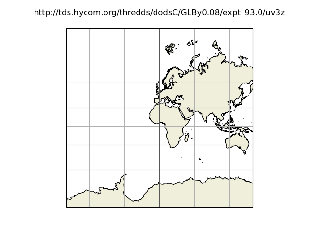
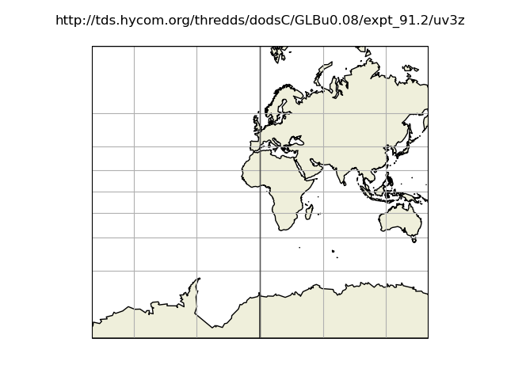

Note
Click here to download the full example code
Thredds resources for GUI¶
from datetime import datetime
from opendrift.models.oceandrift import OceanDrift
from opendrift.readers.reader_netCDF_CF_generic import Reader
o = OceanDrift(loglevel=50)
thredds_resources = open(o.test_data_folder()+'../../opendrift/scripts/data_sources.txt').readlines()
times = {}
Open each thredds dataset to check contents and spatial coverage
for t in thredds_resources:
if t.startswith('http'):
start = datetime.now()
print('\n#%%\n%s\n' % t)
r = Reader(t)
print(r)
ts = str(datetime.now() - start)
times[t] = ts
print('Time to open reader: ', ts)
r.plot()


- 
- 
Out:
#%
https://thredds.met.no/thredds/dodsC/sea/norkyst800m/1h/aggregate_be
===========================
Reader: https://thredds.met.no/thredds/dodsC/sea/norkyst800m/1h/aggregate_be
Projection:
+proj=stere +ellps=WGS84 +lat_0=90.0 +lat_ts=60.0 +x_0=3192800 +y_0=1784000 +lon_0=70
Coverage: [degrees]
xmin: 0.000000 xmax: 2080800.000000 step: 800 numx: 2602
ymin: 0.000000 ymax: 720800.000000 step: 800 numy: 902
Corners (lon, lat):
( -1.58, 58.50) ( 23.71, 75.32)
( 9.19, 55.91) ( 38.06, 70.03)
Vertical levels [m]:
[ -0. -3. -10. -15. -25. -50. -75. -100. -150. -200.
-250. -300. -500. -1000. -2000. -3000.]
Available time range:
start: 2017-02-20 00:00:00 end: 2021-03-19 18:00:00 step: 1:00:00
35731 times (3144 missing)
Variables:
sea_floor_depth_below_sea_level
latitude
longitude
x_wind
y_wind
sea_water_salinity
sea_water_temperature
x_sea_water_velocity
eastward_sea_water_velocity
y_sea_water_velocity
northward_sea_water_velocity
upward_sea_water_velocity
sea_surface_elevation
===========================
Time to open reader: 0:00:01.587415
/opt/conda/envs/opendrift/lib/python3.9/site-packages/shapefile.py:391: UserWarning: Shapefile shape has invalid polygon: no exterior rings found (must have clockwise orientation); interpreting holes as exteriors.
warnings.warn('Shapefile shape has invalid polygon: no exterior rings found (must have clockwise orientation); interpreting holes as exteriors.')
#%
https://thredds.met.no/thredds/dodsC/mepslatest/meps_lagged_6_h_latest_2_5km_latest.nc
===========================
Reader: https://thredds.met.no/thredds/dodsC/mepslatest/meps_lagged_6_h_latest_2_5km_latest.nc
Projection:
+proj=lcc +lat_0=63.3 +lon_0=15 +lat_1=63.3 +lat_2=63.3 +no_defs +R=6.371e+06
Coverage: [degrees]
xmin: -1060084.000000 xmax: 1309916.000000 step: 2500 numx: 949
ymin: -1332517.875000 ymax: 1337482.125000 step: 2500 numy: 1069
Corners (lon, lat):
(-18.12, 72.76) ( 54.24, 71.58)
( 0.28, 50.32) ( 33.03, 49.77)
Vertical levels [m]:
Not specified
Available time range:
start: 2021-03-17 08:00:00 end: 2021-03-19 21:00:00 step: 1:00:00
62 times (0 missing)
Variables (30 ensemble members):
longitude
latitude
x_wind
y_wind
air_temperature
relative_humidity
cloud_area_fraction
air_pressure_at_sea_level
precipitation_amount
snowfall_amount
wind_speed_of_gust
===========================
Time to open reader: 0:00:00.940124
#%
https://thredds.met.no/thredds/dodsC/barents25km_agg
===========================
Reader: https://thredds.met.no/thredds/dodsC/barents25km_agg
Projection:
+proj=lcc +lat_0=77.5 +lon_0=-25 +lat_1=77.5 +lat_2=77.5 +no_defs +R=6.371e+06
Coverage: [degrees]
xmin: 278603.187500 xmax: 2123602.750000 step: 2500 numx: 738
ymin: -897931.625000 ymax: 1472067.625000 step: 2500 numy: 948
Corners (lon, lat):
( 79.56, 87.57) ( 68.83, 71.11)
(-17.96, 69.30) ( 18.62, 62.13)
Vertical levels [m]:
[ -0. -3. -10. -15. -25. -50. -75. -100. -150. -200.
-250. -300. -500. -1000. -2000. -3000.]
Available time range:
start: 2020-06-11 00:00:00 end: 2021-03-19 18:00:00 step: 1:00:00
6763 times (24 missing)
Variables:
sea_floor_depth_below_sea_level
latitude
longitude
sea_binary_mask
ocean_vertical_diffusivity
x_wind
y_wind
sea_ice_area_fraction
sea_ice_thickness
sea_ice_x_velocity
sea_ice_y_velocity
sea_water_salinity
sea_water_temperature
x_sea_water_velocity
y_sea_water_velocity
upward_sea_water_velocity
sea_surface_elevation
istjukkleik - derived from ['sea_ice_thickness']
===========================
Time to open reader: 0:00:02.037191
#%
https://thredds.met.no/thredds/dodsC/cmems/mywavewam3km/dataset-wam-arctic-1hr3km-be.ncml
===========================
Reader: https://thredds.met.no/thredds/dodsC/cmems/mywavewam3km/dataset-wam-arctic-1hr3km-be.ncml
Projection:
+proj=stere +lon_0=-45 +lat_0=90 +k=1 +R=6371000 +no_defs
Coverage: [degrees]
xmin: -3600000.000000 xmax: 3798000.000000 step: 3000 numx: 2467
ymin: -4300000.000000 ymax: 2798000.000000 step: 3000 numy: 2367
Corners (lon, lat):
(-172.86, 50.62) ( 81.38, 49.37)
(-84.94, 42.49) ( -3.55, 41.52)
Vertical levels [m]:
Not specified
Available time range:
start: 2017-11-01 00:00:00 end: 2021-03-26 12:00:00 step: 1:00:00
29797 times (0 missing)
Variables:
sea_floor_depth_below_sea_level
longitude
latitude
sea_water_speed
sea_water_to_direction
sea_surface_wave_significant_height
sea_surface_wave_period_at_variance_spectral_density_maximum
sea_surface_wave_mean_period_from_variance_spectral_density_inverse_frequency_moment
sea_surface_wave_mean_period_from_variance_spectral_density_second_frequency_moment
sea_surface_wave_from_direction
sea_surface_wind_wave_significant_height
sea_surface_wind_wave_mean_period
sea_surface_wind_wave_from_direction
sea_ice_area_fraction
sea_surface_primary_swell_wave_significant_height
sea_surface_primary_swell_wave_mean_period
sea_surface_primary_swell_wave_from_direction
sea_surface_secondary_swell_wave_significant_height
sea_surface_secondary_swell_wave_mean_period
sea_surface_secondary_swell_wave_from_direction
sea_ice_thickness
sea_surface_wave_from_direction_at_variance_spectral_density_maximum
sea_surface_wave_stokes_drift_x_velocity
sea_surface_wave_stokes_drift_y_velocity
istjukkleik - derived from ['sea_ice_thickness']
===========================
Time to open reader: 0:00:03.320603
/opt/conda/envs/opendrift/lib/python3.9/site-packages/shapefile.py:391: UserWarning: Shapefile shape has invalid polygon: no exterior rings found (must have clockwise orientation); interpreting holes as exteriors.
warnings.warn('Shapefile shape has invalid polygon: no exterior rings found (must have clockwise orientation); interpreting holes as exteriors.')
#%
https://thredds.met.no/thredds/dodsC/cmems/topaz6/dataset-topaz6-arc-15min-3km-be.ncml
===========================
Reader: https://thredds.met.no/thredds/dodsC/cmems/topaz6/dataset-topaz6-arc-15min-3km-be.ncml
Projection:
+proj=stere +lon_0=-45 +lat_0=90 +k=1 +R=6378273 +no_defs
Coverage: [degrees]
xmin: -3600000.000000 xmax: 3797999.954224 step: 2999.88 numx: 2467
ymin: -4300000.000000 ymax: 2797999.954224 step: 2999.88 numy: 2367
Corners (lon, lat):
(-172.86, 50.66) ( 81.38, 49.41)
(-84.94, 42.54) ( -3.55, 41.57)
Vertical levels [m]:
Not specified
Available time range:
start: 2018-01-01 00:00:00 end: 2021-03-25 23:45:00 step: 0:15:00
113280 times (0 missing)
Variables:
longitude
latitude
sea_floor_depth_below_sea_level
x_sea_water_velocity
y_sea_water_velocity
sea_surface_height_above_geoid
===========================
Time to open reader: 0:00:03.614809
#%
https://thredds.met.no/thredds/dodsC/topaz/dataset-topaz4-arc-unmasked-be
===========================
Reader: https://thredds.met.no/thredds/dodsC/topaz/dataset-topaz4-arc-unmasked-be
Projection:
+proj=stere +lat_0=90.0 +lon_0=-45.0 +lat_ts=90.0 +k_0=1.0 +x_0=0.0 +y_0=0.0 +units=m +a=6371000.0 +no_defs
Coverage: [degrees]
xmin: -3800000.000000 xmax: 3800000.000000 step: 12500 numx: 609
ymin: -5500000.000000 ymax: 5500000.000000 step: 12500 numy: 881
Corners (lon, lat):
(169.64, 34.63) (100.36, 34.63)
(-79.64, 34.63) (-10.36, 34.63)
Vertical levels [m]:
[ -0. -2. -3. -4. -5. -6. -8. -10. -11. -13.
-16. -18. -22. -25. -29. -34. -40. -47. -56. -66.
-78. -92. -110. -131. -156. -186. -222. -266. -318. -380.
-454. -541. -644. -763. -902. -1062. -2000. -3000. -3500. -4000.]
Available time range:
start: 2021-02-08 00:00:00 end: 2021-03-25 00:00:00 step: 1 day, 0:00:00
46 times (0 missing)
Variables:
longitude
latitude
sea_floor_depth_below_sea_level
sea_water_temperature
sea_water_salinity
x_sea_water_velocity
y_sea_water_velocity
ocean_mixed_layer_thickness
sea_surface_elevation
ocean_barotropic_streamfunction
sea_ice_area_fraction
sea_ice_thickness
sea_ice_x_velocity
sea_ice_y_velocity
surface_snow_thickness
sea_ice_albedo
sea_water_potential_temperature_at_sea_floor
istjukkleik - derived from ['sea_ice_thickness']
===========================
Time to open reader: 0:00:01.934757
/opt/conda/envs/opendrift/lib/python3.9/site-packages/cartopy/io/__init__.py:260: DownloadWarning: Downloading: https://www.ngdc.noaa.gov/mgg/shorelines/data/gshhs/oldversions/version2.2.0/GSHHS_shp_2.2.0.zip
warnings.warn('Downloading: {}'.format(url), DownloadWarning)
/opt/conda/envs/opendrift/lib/python3.9/site-packages/shapefile.py:391: UserWarning: Shapefile shape has invalid polygon: no exterior rings found (must have clockwise orientation); interpreting holes as exteriors.
warnings.warn('Shapefile shape has invalid polygon: no exterior rings found (must have clockwise orientation); interpreting holes as exteriors.')
#%
https://thredds.met.no/thredds/dodsC/sea/nordic4km/zdepths1h/aggregate_be
===========================
Reader: https://thredds.met.no/thredds/dodsC/sea/nordic4km/zdepths1h/aggregate_be
Projection:
+proj=stere +lat_0=90 +lon_0=58 +lat_ts=60 +units=m +a=6.371e+06 +e=0 +no_defs
Coverage: [degrees]
xmin: -3984000.000000 xmax: 96000.000000 step: 4000 numx: 1021
ymin: -2544000.000000 ymax: -236000.000000 step: 4000 numy: 578
Corners (lon, lat):
(-28.61, 52.89) ( 80.14, 87.54)
( 0.56, 46.63) ( 60.16, 65.83)
Vertical levels [m]:
[ -0. -3. -10. -15. -25. -50. -75. -100. -150. -200.
-250. -300. -500. -700. -1000. -2000. -3000.]
Available time range:
start: 2016-09-19 00:30:00 end: 2021-03-22 00:00:00 step: 1:00:00
39480 times (383 missing)
Variables:
sea_floor_depth_below_sea_level
latitude
longitude
sea_ice_area_fraction
sea_ice_thickness
sea_water_salinity
sea_water_temperature
x_sea_water_velocity
sea_ice_x_velocity
y_sea_water_velocity
sea_ice_y_velocity
sea_surface_elevation
istjukkleik - derived from ['sea_ice_thickness']
===========================
Time to open reader: 0:00:03.312588
#%
https://thredds.met.no/thredds/dodsC/aromearcticlatest/arome_arctic_extracted_2_5km_latest.nc
===========================
Reader: https://thredds.met.no/thredds/dodsC/aromearcticlatest/arome_arctic_extracted_2_5km_latest.nc
Projection:
+proj=lcc +lat_0=77.5 +lon_0=-25 +lat_1=77.5 +lat_2=77.5 +no_defs +R=6.371e+06
Coverage: [degrees]
xmin: 278603.156250 xmax: 2123603.250000 step: 2500 numx: 739
ymin: -897931.562500 ymax: 1472068.500000 step: 2500 numy: 949
Corners (lon, lat):
( 79.56, 87.57) ( 68.83, 71.11)
(-17.96, 69.30) ( 18.62, 62.13)
Vertical levels [m]:
Not specified
Available time range:
start: 2021-03-17 06:00:00 end: 2021-03-20 00:00:00 step: 1:00:00
67 times (0 missing)
Variables:
longitude
latitude
air_temperature
surface_geopotential
liquid_water_content_of_surface_snow
x_wind - derived from ['wind_speed', 'wind_from_direction']
y_wind - derived from ['wind_speed', 'wind_from_direction']
downward_northward_momentum_flux_in_air
downward_eastward_momentum_flux_in_air
specific_humidity
mass_fraction_of_cloud_condensed_water_in_air
mass_fraction_of_cloud_ice_in_air
integral_of_toa_net_downward_shortwave_flux_wrt_time
integral_of_surface_net_downward_shortwave_flux_wrt_time
cloud_area_fraction
mass_fraction_of_snow_in_air
mass_fraction_of_rain_in_air
mass_fraction_of_graupel_in_air
geopotential
integral_of_toa_outgoing_longwave_flux_wrt_time
integral_of_surface_net_downward_longwave_flux_wrt_time
water_evaporation_amount
surface_snow_sublimation_amount
integral_of_surface_downward_sensible_heat_flux_wrt_time
relative_humidity
integral_of_surface_downwelling_shortwave_flux_in_air_wrt_time
integral_of_surface_downwelling_longwave_flux_in_air_wrt_time
rainfall_amount
snowfall_amount
surface_air_pressure
graupel_fall_amount
high_type_cloud_area_fraction
medium_type_cloud_area_fraction
specific_convective_available_potential_energy
low_type_cloud_area_fraction
atmosphere_convective_inhibition
upward_air_velocity
atmosphere_lifting_condensation_level_wrt_surface
atmosphere_boundary_layer_thickness
ertel_potential_vorticity
atmosphere_level_of_free_convection_wrt_surface
air_pressure_at_sea_level
lwe_thickness_of_atmosphere_mass_content_of_water_vapor
wind_from_direction
wind_speed
precipitation_amount
wind_speed_of_gust
x_wind - derived from ['wind_speed', 'wind_from_direction']
y_wind - derived from ['wind_speed', 'wind_from_direction']
===========================
Time to open reader: 0:00:01.135318
#%
https://pae-paha.pacioos.hawaii.edu/thredds/dodsC/ncep_global/NCEP_Global_Atmospheric_Model_best.ncd
===========================
Reader: https://pae-paha.pacioos.hawaii.edu/thredds/dodsC/ncep_global/NCEP_Global_Atmospheric_Model_best.ncd
Projection:
+proj=latlong
Coverage: [degrees]
xmin: 0.000000 xmax: 359.500000 step: 0.5 numx: 720
ymin: -90.000000 ymax: 90.000000 step: 0.5 numy: 361
Corners (lon, lat):
( 0.00, 90.00) (359.50, 90.00)
( 0.00, -90.00) (359.50, -90.00)
Vertical levels [m]:
Not specified
Available time range:
start: 2011-05-06 12:00:00 end: 2021-03-24 12:00:00 step: 3:00:00
28881 times (102 missing)
Variables:
air_pressure_at_sea_level
surface_net_downward_longwave_flux
surface_net_downward_shortwave_flux
precipitation_flux
relative_humidity
surface_temperature
air_temperature
eastward_wind
northward_wind
x_wind
y_wind
===========================
Time to open reader: 0:00:01.668659
#%
http://tds.hycom.org/thredds/dodsC/GLBy0.08/latest
===========================
Reader: http://tds.hycom.org/thredds/dodsC/GLBy0.08/latest
Projection:
+proj=latlong
Coverage: [degrees]
xmin: 0.000000 xmax: 359.920044 step: 0.0799561 numx: 4502
ymin: -80.000000 ymax: 90.000000 step: 0.0400009 numy: 4250
Corners (lon, lat):
( 0.00, 90.00) (359.92, 90.00)
( 0.00, -80.00) (359.92, -80.00)
Vertical levels [m]:
[ -0. -2. -4. -6. -8. -10. -12. -15. -20. -25.
-30. -35. -40. -45. -50. -60. -70. -80. -90. -100.
-125. -150. -200. -250. -300. -350. -400. -500. -600. -700.
-800. -900. -1000. -1250. -1500. -2000. -2500. -3000. -4000. -5000.]
Available time range:
start: 2021-03-11 12:00:00 end: 2021-03-24 00:00:00 step: 3:00:00
101 times (0 missing)
Variables:
sea_surface_elevation
eastward_sea_water_velocity
eastward_sea_water_velocity_at_bottom
northward_sea_water_velocity
northward_sea_water_velocity_at_bottom
sea_water_temperature
sea_water_temperature_at_bottom
sea_water_salinity
sea_water_salinity_at_bottom
x_sea_water_velocity
y_sea_water_velocity
===========================
Time to open reader: 0:00:00.394303
#%
http://tds.hycom.org/thredds/dodsC/GLBy0.08/expt_93.0/uv3z
===========================
Reader: http://tds.hycom.org/thredds/dodsC/GLBy0.08/expt_93.0/uv3z
Projection:
+proj=latlong
Coverage: [degrees]
xmin: 0.000000 xmax: 359.920044 step: 0.0799561 numx: 4502
ymin: -80.000000 ymax: 90.000000 step: 0.0400009 numy: 4250
Corners (lon, lat):
( 0.00, 90.00) (359.92, 90.00)
( 0.00, -80.00) (359.92, -80.00)
Vertical levels [m]:
[ -0. -2. -4. -6. -8. -10. -12. -15. -20. -25.
-30. -35. -40. -45. -50. -60. -70. -80. -90. -100.
-125. -150. -200. -250. -300. -350. -400. -500. -600. -700.
-800. -900. -1000. -1250. -1500. -2000. -2500. -3000. -4000. -5000.]
Available time range:
start: 2018-12-04 12:00:00 end: 2021-03-17 09:00:00 step: 3:00:00
6672 times (133 missing)
Variables:
eastward_sea_water_velocity
eastward_sea_water_velocity_at_bottom
northward_sea_water_velocity
northward_sea_water_velocity_at_bottom
x_sea_water_velocity
y_sea_water_velocity
===========================
Time to open reader: 0:00:00.336219
#%
http://tds.hycom.org/thredds/dodsC/GLBu0.08/expt_91.2/uv3z
===========================
Reader: http://tds.hycom.org/thredds/dodsC/GLBu0.08/expt_91.2/uv3z
Projection:
+proj=latlong
Coverage: [degrees]
xmin: 0.000000 xmax: 359.920044 step: 0.0799561 numx: 4502
ymin: -80.000000 ymax: 80.000000 step: 0.0800018 numy: 2000
Corners (lon, lat):
( 0.00, 80.00) (359.92, 80.00)
( 0.00, -80.00) (359.92, -80.00)
Vertical levels [m]:
[ -0. -2. -4. -6. -8. -10. -12. -15. -20. -25.
-30. -35. -40. -45. -50. -60. -70. -80. -90. -100.
-125. -150. -200. -250. -300. -350. -400. -500. -600. -700.
-800. -900. -1000. -1250. -1500. -2000. -2500. -3000. -4000. -5000.]
Available time range:
start: 2016-04-18 00:00:00 end: 2018-11-20 00:00:00 step: 1 day, 0:00:00
947 times (27 missing)
Variables:
eastward_sea_water_velocity
northward_sea_water_velocity
x_sea_water_velocity
y_sea_water_velocity
===========================
Time to open reader: 0:00:17.642056
Summary of times to open each dataset:
for t, time in times.items():
print(time, t)
Out:
0:00:01.587415 https://thredds.met.no/thredds/dodsC/sea/norkyst800m/1h/aggregate_be
0:00:00.940124 https://thredds.met.no/thredds/dodsC/mepslatest/meps_lagged_6_h_latest_2_5km_latest.nc
0:00:02.037191 https://thredds.met.no/thredds/dodsC/barents25km_agg
0:00:03.320603 https://thredds.met.no/thredds/dodsC/cmems/mywavewam3km/dataset-wam-arctic-1hr3km-be.ncml
0:00:03.614809 https://thredds.met.no/thredds/dodsC/cmems/topaz6/dataset-topaz6-arc-15min-3km-be.ncml
0:00:01.934757 https://thredds.met.no/thredds/dodsC/topaz/dataset-topaz4-arc-unmasked-be
0:00:03.312588 https://thredds.met.no/thredds/dodsC/sea/nordic4km/zdepths1h/aggregate_be
0:00:01.135318 https://thredds.met.no/thredds/dodsC/aromearcticlatest/arome_arctic_extracted_2_5km_latest.nc
0:00:01.668659 https://pae-paha.pacioos.hawaii.edu/thredds/dodsC/ncep_global/NCEP_Global_Atmospheric_Model_best.ncd
0:00:00.394303 http://tds.hycom.org/thredds/dodsC/GLBy0.08/latest
0:00:00.336219 http://tds.hycom.org/thredds/dodsC/GLBy0.08/expt_93.0/uv3z
0:00:17.642056 http://tds.hycom.org/thredds/dodsC/GLBu0.08/expt_91.2/uv3z
Total running time of the script: ( 1 minutes 11.301 seconds)